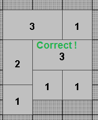
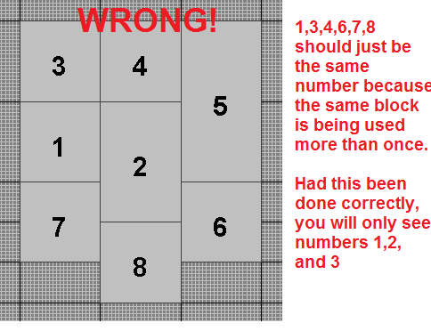
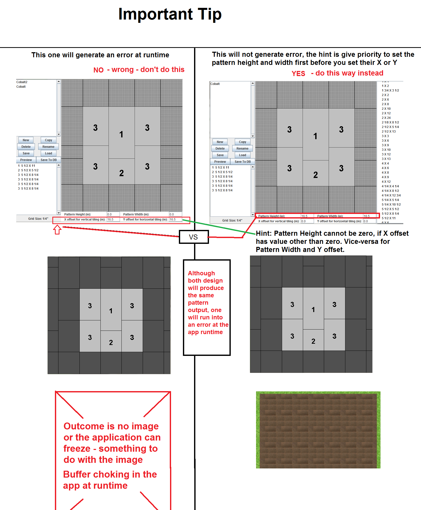
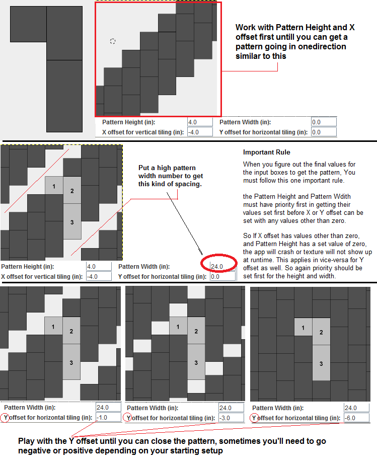

Pattern Editor
A little gui interface software (we wrote) use to draw and make our landscaping block patterns. It helps us figure out complex shapes (rects & squares) put into a pattern so that the pattern can repeat infinitely.
To start using it, get the app just how you would with deck and landscaping. To run it however, you must build it using maven clean package. You will get a zip folder put under the "target" folder. look for a zip file named (PatternEditor-...).zip. You want to Export the zip (anywhere) and run the jar.
Note that there are multiple ways to get the patterns. For example, if you get the paterns using the numbers 22,33,22,11, it is possible to replicate the same patterns using another set of numbers like 33,55,22,11. Depending the method you use, Each method you choose below will give you different number inputs to create the pattern. In the end the numbers don't matter, as long as the pattern is correctly set with whatever numbers you use - with a few exceptions of course.
To create the jar
- browse to the app source location > right click > DOS Prompt
mvn clean install
- the .zip file should be created in the target folder
- Extract the .zip folder to somewhere, double click on the jar
To run the jar
- After unzipping to another folder, Usually double clicking on the jar will work but if not you will have to use the command prompt
- right click on a folder in the directory where the jar file is > DOS Prompt Here
- java -jar Pattern_Editor_Name.jar
- Hit enter and the app should run
Tips
- Pattern Editor doesn't like blocks that are too small after the decimal like 2.975,
it will look like it will work, but when landscape runs, the pattern will not show up. The current known way to work around this is to
use another block of similar size that does not have decimals. 9.5 and 9.75 will work, but 9.33 becomes too decimal-ish to work.
- Pattern editor does not like small decimal numbers in the x-y offset and height width, so keep it close to whole or half as you can
- click on "New" first before you can create a block
- Double click on the 4x8, 5,8, etc to get a block and drag it into scene
- Mouse click to rotote and right click to set the block down
- IMPOTANT-Only grab the right hand column sizes once per block, then you want to use the left size column sizes to reuse the block size
- If you have two same block sizes in the grid, they both should have the same number, otherwise you are doing it wrong
- 
- 
- Use the methods described further in details below to get a pattern
- When you find one correct set of numbers that works, save and you'll get a excel file
- In the excel, you want to copy the "grid" section > this gets put into the database
Best Method
Best method is to start with the pattern height and then work on the X-offset until you can get a good pattern going, then finish off with the Y-offset
